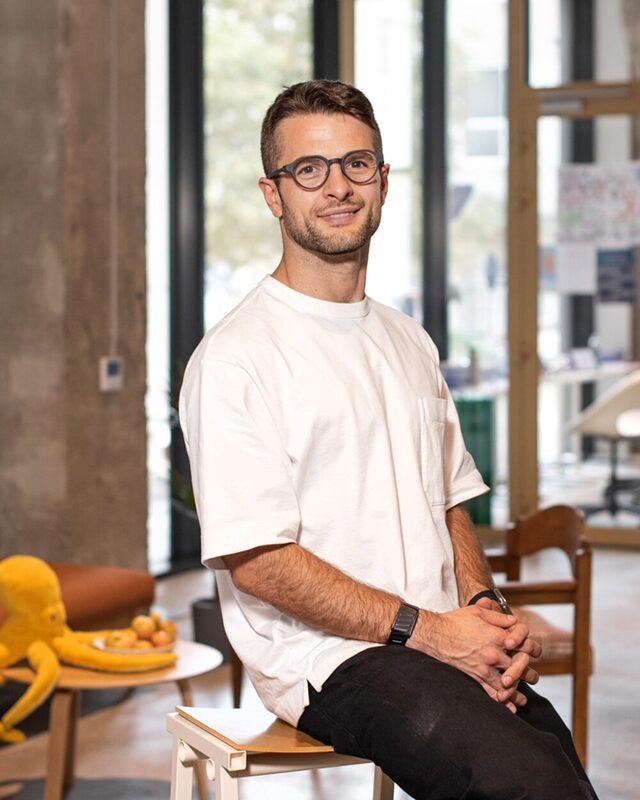
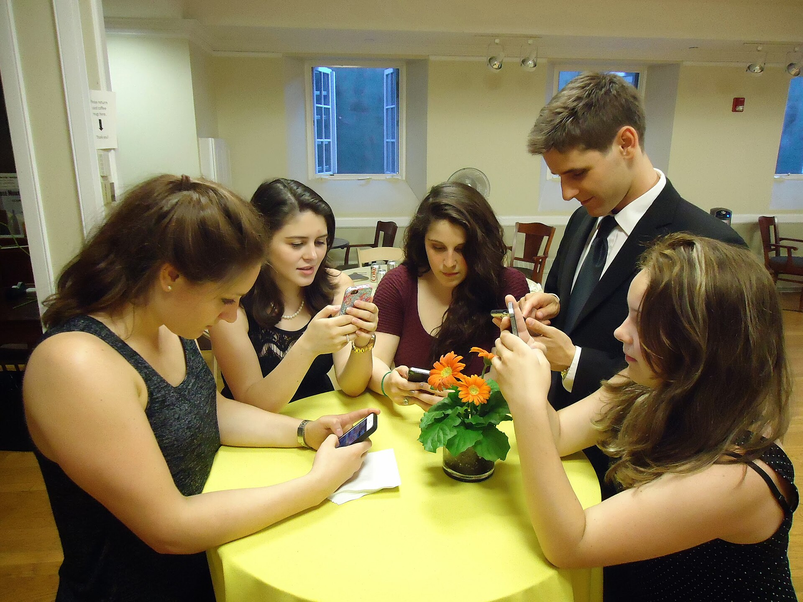
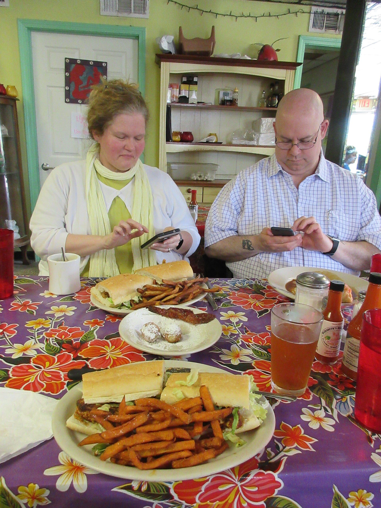
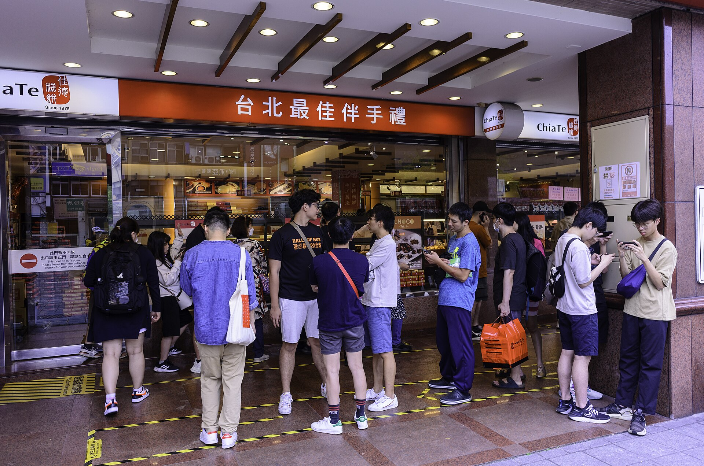
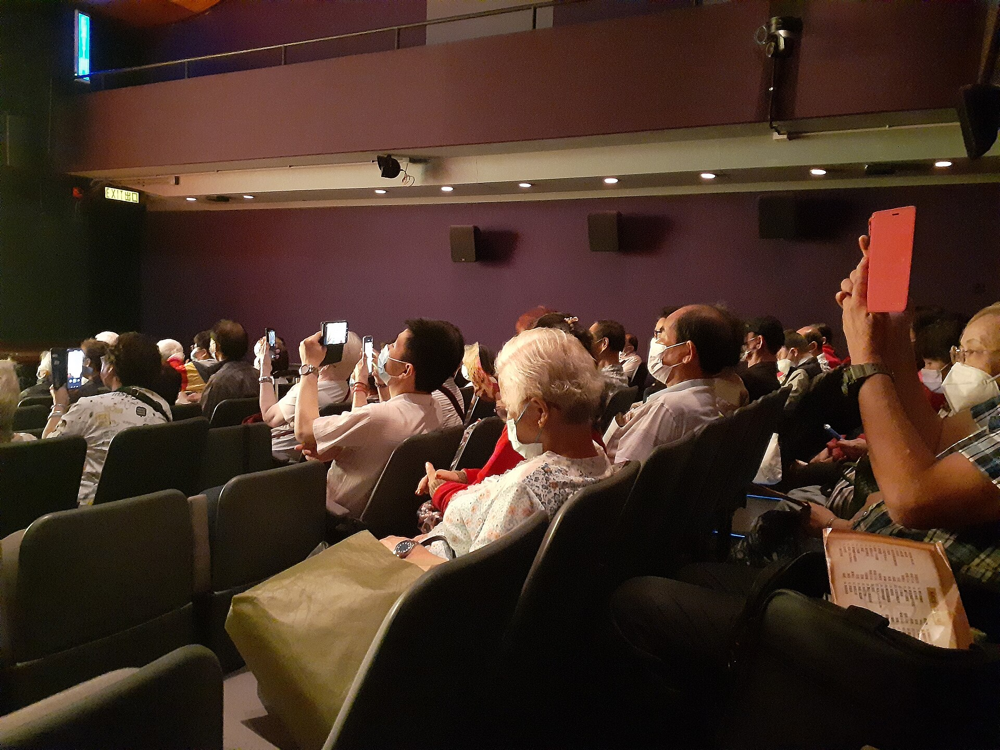
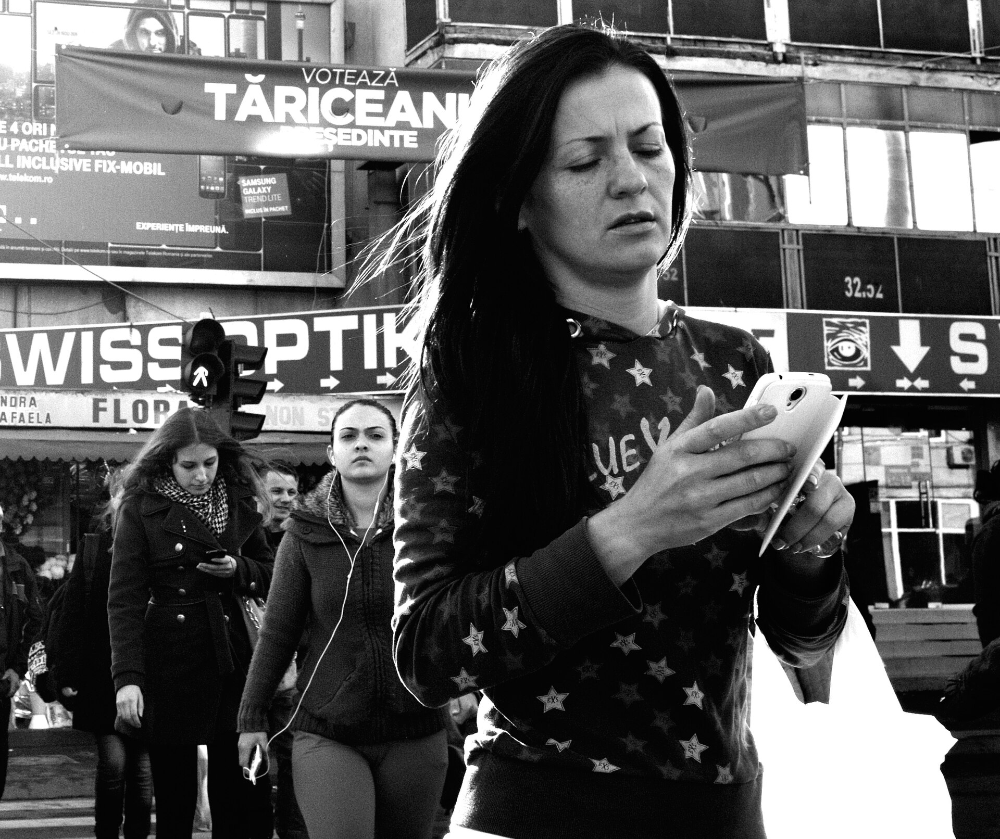
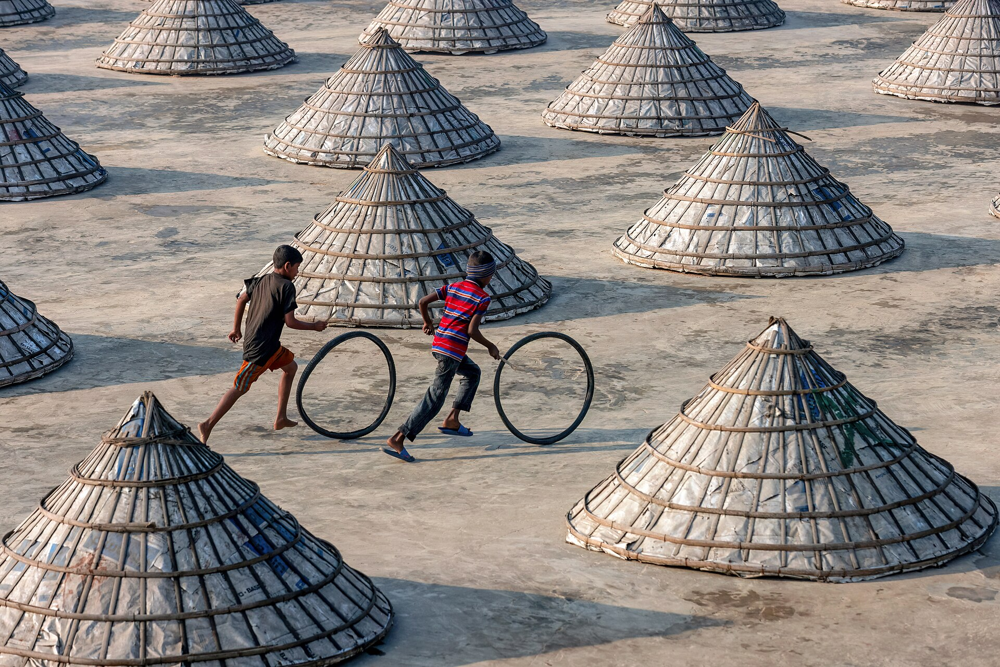
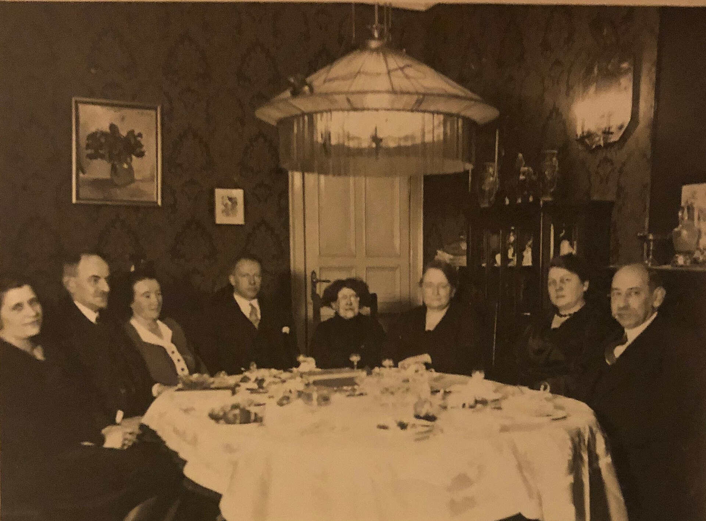
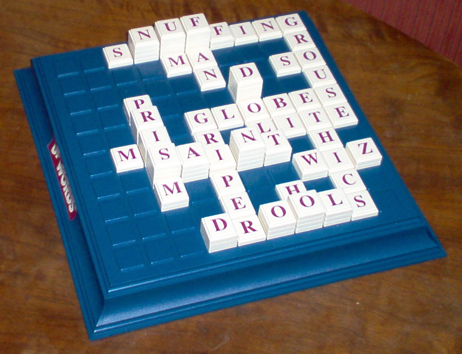
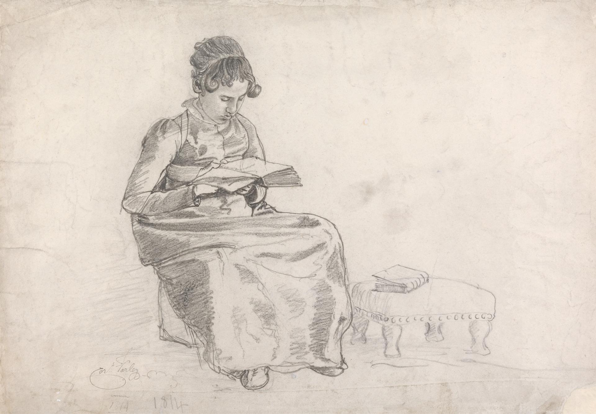

Stalo manieros telefonams. Namuose, mokykloje, darbe ir lauke.
Kris Vas · 2026-10-22
Nuskenuokite telefonu. Jis taps jūsų pulteliu.
Pasisveikink. „Prašau išsitraukti telefoną. Taip, šiandien vienintelį kartą pats to prašau." Kol jungiasi, paklausk: kas jūs šiandien? Laukti, kol 📱 skaičius viršuje sustos. 90 s.
Kodėl pradedam nuo telefono
Paradoksas sąmoningas: telefonas kaip įrankis su aiškiu tikslu. Tai ir yra etiketas.
Jei internetas neveikia: „Pakelkite rankas" vietoj balsavimo.
Šiandien, kol kalbėsiu, kažkas išsitrauks telefoną.
Aš nežinosiu: fotografuoji? Užsirašai? Ar jau esi kitur?
Tada jaučiuosi, kad nesu svarbus.
Lėtai. Pauzė po pirmos eilutės. „Man skauda labiausiai per pranešimus. Nenoriu spėlioti. O jūs?" → pereik prie klausimo.
Klausimas 1
Perskaityk atsakymus garsiai. Jei daug „priklauso, kam naudoja": „Būtent. Problema ne telefone. Problema, kad aš nežinau, kam."

Kodėl kalbu aš
Kris Vas
13 metų kuriu būrelius vaikams. Tikiu knygomis, tikromis patirtimis, galerijomis, muziejais, knygynais ir bibliotekomis.
Ne mokslininkas. Žmogus, kuris kasdien mato šią problemą ir nori ją spręsti.
Atvirai: esu Robotikos Akademijos bendraįkūrėjas. Mūsų būreliuose telefonų nėra. Šiandien kalbu ne apie būrelius, o apie mus visus.
Trumpai, 60 s. Interesų konfliktą pasakyk garsiai, ne tik ekrane. Niekada nesakyk „kaip tėvas".
Kur bepažiūrėtum

Kartu prie stalo. Kiekvienas atskirai.

Restoranas

Eilė

Renginys
Stotelė

Gatvė
Sporto salė
Pasakok scenas iš savo patirties: kiemas, kur vaikai nebežaidžia kartu; pertrauka mokykloje be telefonų taisyklės: niekas nekalba, nežaidžia, nesimoko vieni iš kitų; restoranas: vaikui ausinės ir planšetė su YouTube Shorts, jokio stalo žaidimo, jokios įdomios temos; eilė, kur vietoj pokalbio su nepažįstamu išsitraukiam telefoną. 100 s.
Papildomai
Radesky ir kt. 2014 (Pediatrics): greito maisto restoranuose 40 iš 55 suaugusiųjų valgant naudojo įrenginius. Stebėjimas, 1 miestas. B-
Ne tik vaikai. Pirmiausia mes.
0%
paauglių sako: kai jie kalba, tėtis ar mama bent kartais būna užsiėmę telefonu B
0%
tėvų patys sako: telefone praleidžia per daug laiko B
0
iš 55 suaugusiųjų restorane valgydami naudojo įrenginį B-
Darbe nuobodu? Telefonas. Kažkas išsitraukė? Išsitraukiam ir mes. Vaikai kopijuoja ne žodžius, o mus.
Pew Research Center 2024 (JAV, 1 453 paauglių ir tėvų poros) · Radesky ir kt. 2014, Pediatrics
„Kai matom blogą pavyzdį, kartojam. Ir tai keliauja per visas kartas." Pasakyk ir apie panelines diskusijas: aukšto lygio žmonės diskusijos viduryje išsitraukia telefoną. Neturim standarto, kad telefonas turi savo vietą ir laiką.
Atsargiai
Pew duomenys: JAV, savęs vertinimas, ne priežastis.
„Veidrodiniai neuronai" kaip paaiškinimas yra populiarus, bet moksle ginčytinas. Sakyk „kopijuojam", ne „veidrodiniai neuronai įrodo".
Lietuvos tėvų elgesio su telefonu tyrimo neradom. Sakyk tai atvirai, jei klaus.
Kas nutiko per 15 metų
2010 metai viską pakeitė
2010 IV
iPad. Planšetė vaikų rankose.
2010 VI
iPhone 4 su priekine kamera. Asmenukių era.
2010 X
Instagram. Gyvenimas kaip vitrina.
2010–2015
„Didysis perjungimas": vaikystė persikelia į telefoną.
Haidt, J. (2024). The Anxious Generation, 1 dalis.
Haidt'o terminas: „The Great Rewiring". Iki 2010 telefonas buvo skambinti. Po 2015 dauguma paauglių turi išmanųjį su socialiniais tinklais ir priekine kamera.

Žaidimais grįsta vaikystė
Telefonu grįsta vaikystė
Haidt, J. (2024). The Anxious Generation: „play-based childhood → phone-based childhood".
Haidt'o mintis: per daug saugom realiame pasaulyje (nevaliojam vieni į kiemą), per mažai saugom virtualiame. Kiemas, laisvas žaidimas, rizika ir draugai pakeisti ekranu.
JAV paaugliai 12–17 m., sunkus depresijos epizodas per metus
2021: NIMH / NSDUH (A). 2011 ir tarpiniai taškai: apytiksliai pagal Haidt (2024) grafiką, ne tikslūs metiniai duomenys.
Pasakyk: „Per 10 metų mergaičių beveik 2,5 karto daugiau." Linija tarp taškų iliustracinė. Jei klaus: tai JAV duomenys. Lietuvoje panašaus ilgalaikio grafiko neradau.
Faktai
NIMH (NSDUH 2021): 29,2 % mergaičių, 11,5 % berniukų 12–17 m. A
2011 m. ~12 % ir ~4,5 %: pagal Haidt (2024) grafiką. B ⚠️ tikslinti
15 metų skaičiais
0%
JAV paauglių turi išmanųjį telefoną (2014–15 m.: 73 %) A
0%
paauglių internete „beveik visą laiką" (2014–15 m.: 24 %) A
0%
savęs žalojimo atvejų skubios pagalbos skyriuose, mergaitės 10–14 m., 2010–2020 B
Laikas su draugais gyvai: beveik perpus mažiau per dešimtmetį.
Pew Research Center 2015 ir 2024 · Haidt 2024 pagal CDC duomenis · Haidt 2024 pagal JAV laiko naudojimo tyrimą (ATUS, 15–24 m.)
Atsargiai
+188 % ir „perpus mažiau su draugais" cituojami iš Haidt knygos, pirminiai CDC ir ATUS duomenys neatidaryti. B
Visi skaičiai iš JAV.
Haidt: 4 pagrindinės žalos
01 VienatvėMažiau laiko akis į akį
02 MiegasTelefonas lovoje, miego mažiau
03 DėmesysPranešimai skaido mintis
04 PriklausomybėProgramėlės kurtos grąžinti mus atgal
Haidt, J. (2024). The Anxious Generation, 2 dalis.
Neskaityk visų, parodyk ir pasakyk vieną: „Iš šitų keturių aš labiausiai matau trečią."
Sąžiningai
Ne visi mokslininkai sutinka
Kritikai (C. Odgers, A. Orben, A. Przybylski) sako: ryšys tarp ekranų ir paauglių psichikos yra silpnas ir ginčijamas, o priežastis neįrodyta.
Bet etiketui nereikia įrodymų. Mes nelaukiam tyrimų, kad nustotume rūgti prie stalo.
Odgers, C. (2024), Nature knygos apžvalga · Orben ir Przybylski darbai · Haidt atsako afterbabel.com
Mokytojų salėje tai sustiprina pasitikėjimą. 50 s. Pasakyk: „Aš nesiginčiju, ar telefonas sukelia depresiją. Aš sakau: mums reikia susitarimų, kaip elgiamės vieni su kitais."
Klausimas 2
Sąžiningai, be gėdos. Pakomentuok tik daugumą.
Tai ne silpna valia. Tai dizainas.
∞ Begalinis sraigtasNėra pabaigos, nėra kur sustoti
🔔 Pranešimai ir garsaiKažkas kitas sprendžia, kada pažiūrėsi
▶ Trumpi videoShorts, TikTok, Reels: vienas po kito
❤ PatiktukaiKiek mane mėgsta? Pažiūrėsiu dar kartą
⏸ Nuobodulio nebėraO nuobodulyje gimsta idėjos ir pokalbiai
„Praradom nuobodulį ir pagarbą šalia esančiam žmogui." Nesakyk „priklausomybė" kaip diagnozė; sakyk „sukurta, kad grįžtume".
Ar užtenka uždrausti?
Draudimas vienas neišsprendžia
JK, 30 mokyklų, 1 227 mokiniai: griežtos telefonų taisyklės mokykloje nebuvo susijusios su geresne savijauta ar miegu. Daugiau asmeninio naudojimo buvo susiję su blogesne.
Telefonas grįžta namo, į autobusą, į kiemą. Reikia ne draudimo, o susitarimo. Ir pavyzdžio.
Goodyear ir kt. (2025), SMART Schools, Lancet Regional Health Europe. Skerspjūvio tyrimas: ryšys, ne priežastis. B
„Joks draudimas vienas nieko neišsprendė." Bet nesakyk, kad draudimai blogi: mokykla be telefonų pertraukose yra gerai, tik to neužtenka.
Klausimas 3

1530 metai
Kodėl atsirado stalo etiketas?
Erazmas Roterdamietis parašė knygelę vaikams apie elgesį prie stalo. Ji tapo bestseleriu visoje Europoje.
Etiketas atsirado ne iš draudimų. Jis atsirado, kad kartu būti būtų malonu ir saugu.
Erasmus (1530), De civilitate morum puerilium · Elias, N. (1939), Civilizacijos procesas
Papildomai
Sociologas N. Elias aprašė, kaip per šimtmečius manieros tapo savaime suprantamos: tai, kas buvo normalu, tapo gėdinga.
Tas pats gali nutikti telefonams prie stalo.
Tai jau mokam
Stalo etiketas → Technologijų etiketas
Negazuojam ir nerūgstam prie stalo
→
Nescrollinam, kai kitas kalba
Sakom „prašau" ir „ačiū"
→
Sakom: „Atsiprašau, užsirašysiu"
Žiūrim į akis
→
Veidas prieš ekraną
Esam mandagūs
→
Telefonas turi savo vietą ir laiką
Juokinga dalis: „Juk niekas prie stalo negazuoja. Niekas nedraudžia, bet niekas ir nedaro. Taip bus ir su telefonais."
Technologijų etiketas · v1
10 taisyklių
01Veidas prieš telefoną
06Pirma laikmatis
02Stalas be telefonų
07Pilka reiškia ramu
03Pranešimai išjungti
08Viena užduotis, vienas ekranas
04Klausk prieš fotografuodamas
09Telefonai miega ne miegamajame
05Skambutis palauks
10Pasakyk, kai padėjo DI
Neskaityk visų. Išsirink 3, kurias pats laikai, ir papasakok kaip. Visos su šaltiniais yra medžiagoje per QR pabaigoje.
Kaip pradėti šį vakarą
Pilkas ekranasSpalvos traukia. Mažuose tyrimuose −20…−50 min. per dieną.B
🏠 Telefono namelisDėžutė prie durų. Kai kartu, telefonai ten.B-
🔕 Be pranešimų ir garsųTu sprendi, kada žiūri.B
🎯 TikslingaiPrieš paimdamas: „Kam? Kodėl dabar?"B
🎮 Žaidžiam kartuNaujos technologijos: kartu ir dalinamės, ką išmokom.B-
📓 PopieriusKnyga vietoj sraigto. Sąsiuvinis. Padėkos raštelis.B
Išsitrauki telefoną prie žmogaus? Pasakyk kam: „užsirašysiu", „nufotografuosiu", „parodysiu".
Pilkas ekranas: Holte ir Ferraro 2020; Dekker ir Baumgartner 2024; Price 2018; Haidt ir Price 2025 (The Amazing Generation, p. 92) · Pranešimai: Kushlev ir kt. 2016 · Popierius: Delgado ir kt. 2018
Pilkas ekranas: pasakyk savo patirtį, bet NE „30 %" kaip faktą (tai tavo n=1). Telefono namelis: parodyk fizinę dėžutę, jei turi. „Padaryk priklausomybę mažiau patrauklią."
Įrodymų lygis
Pilkas ekranas: maži tyrimai su jaunais suaugusiais; atrakinimų skaičius nesikeitė; vaikų tyrimų beveik nėra. B
Pranešimai: Kushlev, Proulx, Dunn 2016 (CHI): įjungti pranešimai → daugiau neatidumo. B
Skaitymas iš popieriaus: Delgado ir kt. 2018 metaanalizė, supratimas geresnis iš popieriaus. A
Užrašai ranka: Mueller ir Oppenheimer 2014, bet replikacijos (Morehead 2019) nevienareikšmės. C
Naujos technologijos
Telefonas pasiima dėmesį. DI gali pasiimti mąstymą.
Kai kuri su DI, pasakyk: „padėjo DI". DI kaip mokymosi treneris, ne vietoj tavęs.
DI parašytą tekstą jauti iš karto. Jame nėra skonio. Ir nėra tavęs.
Kosmyna ir kt. (2025), „Your Brain on ChatGPT", MIT Media Lab, nerecenzuotas preprintas, 54 dalyviai. C
MIT tyrimą minėk atsargiai: „ankstyvas, mažas tyrimas rodo, kad rašant su DI mažiau įsimenam savo tekstą". Ne „DI gadina smegenis".
Grįžkim į tikrą gyvenimą
Kiemas

Stalo žaidimai
Sąsiuvinis
Vakarienė kartu

Knyga
„Šimtai koncertų video, kurių niekada nežiūrėsim. Maisto nuotraukos. Sraigtas iš nuobodulio. Tai švaisto mūsų gyvenimą." Pasiūlyk: nešiokimės daugiau knygų nei telefonų. Galerijos, muziejai, knygynai, bibliotekos.
Klausimas 4
Klausimas 5
Kur sunkiausia, ten ir pradėkim. Paklausk vieno žmogaus balsu: „Kodėl?"
Kiek žmonių reikia, kad norma pasikeistų?
0%
Eksperimente įsipareigojusi mažuma (~25 %) apvertė grupės normą A
0%
Istorinis pastebėjimas: taikūs judėjimai, kuriuose aktyviai dalyvavo 3,5 % gyventojų, dažniausiai laimėjo B
5%
Mūsų tikslas: pirmieji tėvai, vaikai ir mokytojai, kurie tiki, laikosi ir saugo šį standartą
Aukšti standartai. Didelė šiluma. Ne bausmės, o pavyzdys.
Centola ir kt. (2018), Science 360 · Chenoweth ir Stephan (2011), Why Civil Resistance Works · 5 % yra Kris'o tikslas, ne tyrimo skaičius.
Svarbu sąžiningai: „5 % nėra mokslinis skaičius. Tai mano tikslas: pradėti nuo mažumos, kuri tiki." Šiluma: nesigėdinam, neperšam, rodom.
Klausimas 6
Ar Z ir Alfa karta bus pirmosios, kurios turės daugiau prisiminimų iš Roblox, Minecraft ir Brawl Stars nei iš tikro gyvenimo?
Negalim pakeisti kartos, jei nepakeisim savęs.
Tai klausimas, ne faktas: tyrimo, kuris tai matuotų, neradom. „Mane šita mintis sugniuždė. Noriu tai pakeisti." Pasirenkama skaidrė (praleidžiama →, jei vėluoji).
Sakom kartu
Kai esu su tavimi,visas mano dėmesys tavo,nes tu svarbus.
Aš pasirinkau būti čia. Telefonas šią žinią padaro neaiškią.
Paprašyk visų atsistoti, jei drąsu. Sakom kartu, garsiai, vieną kartą. Filmavimui: geras kadras.
Klausimas 7
Perskaityk 3–4 atsakymus garsiai. Žodžiai rodomi tik iki 60 ženklų.
Pasirenkama · jei liko laiko
Pasiklausykim pačių autorių
Y paleidžia pirmą. Visi trys yra medžiagoje per QR.
Video angliškai. Rodyk tik 60–90 s, jei liko laiko. Interneto nėra? Praleisk.
Jūsų klausimai
Klauskite.
T: laikmatis 10 min.
10:00
10 min. Jei tylu, pradėk pats: „Dažniausias klausimas, kurį gaunu: nuo kokio amžiaus telefonas?" Haidt: ne iki ~14 m. (išmanusis), socialiniai tinklai ne iki 16. Tai jo norma, ne įstatymas.
Haidt'o 4 normos
Jokio išmaniojo iki ~14 m. (iki gimnazijos)
Jokių socialinių tinklų iki 16
Mokyklos be telefonų
Daugiau laisvo žaidimo ir savarankiškumo
Paskutinis klausimas
„Būkite atviri. Taip aš tobulėju." Telefonuose po to atsiras mygtukas „Pasidalink su kitais tėvais".
Ačiū, kad buvote čia
Geriausias žaidimas yra tikras gyvenimas.
Pasidalinkite su kitais tėvais, darbe, draugais. Užtenka kelių, kad prasidėtų.
Kris Vas · IG @kristijonas.vas · TikTok @krisvas369 · LinkedIn
Medžiaga sau ir kitiems
Šaltiniai · įrodymų lygis A stiprus · B vidutinis · C silpnas
Haidt, J. (2024). The Anxious Generation. Penguin Press. anxiousgeneration.com (ginčijama, žr. 9)
Haidt, J., Price, C. (2025). The Amazing Generation, p. 92 (pilkas ekranas).
NIMH. Major Depression statistics (NSDUH 2021). nimh.nih.gov A
Pew Research Center (2024-12-12). Teens, Social Media and Technology 2024. pewresearch.org A
Pew Research Center (2015-04-09). Teens, Social Media & Technology Overview 2015. pewresearch.org A
Pew Research Center (2024-03-11). How Teens and Parents Approach Screen Time. pewresearch.org B
Radesky, J. ir kt. (2014). Patterns of mobile device use by caregivers and children during meals. Pediatrics. pubmed B-
Goodyear, V. ir kt. (2025). SMART Schools. Lancet Regional Health Europe. pmc B
Odgers, C. (2024). Knygos apžvalga, Nature; Orben, A., Przybylski, A. (2019). Nature Human Behaviour. doi
Centola, D. ir kt. (2018). Experimental evidence for tipping points in social convention. Science 360. doi A
Chenoweth, E., Stephan, M. (2011). Why Civil Resistance Works. Columbia UP. B
Erasmus (1530). De civilitate morum puerilium. · Elias, N. (1939). Über den Prozess der Zivilisation.
Price, C. (2018). How to Break Up with Your Phone. Ten Speed Press.
Holte, A., Ferraro, F. (2020). Social Science Journal; Dekker, C., Baumgartner, S. (2024). Mobile Media & Communication. B
Kushlev, K., Proulx, J., Dunn, E. (2016). „Silence your phones". CHI '16. B
Delgado, P. ir kt. (2018). Don't throw away your printed books. Educational Research Review 25. A
Mueller, P., Oppenheimer, D. (2014). Psychological Science; Morehead, K. ir kt. (2019) replikacija. C
Kosmyna, N. ir kt. (2025). Your Brain on ChatGPT. arXiv preprintas. C
Przybylski & Weinstein (2013); Ward ir kt. (2017) „Brain Drain": replikacijos nepavyko. C, į pranešimą neįtraukta.